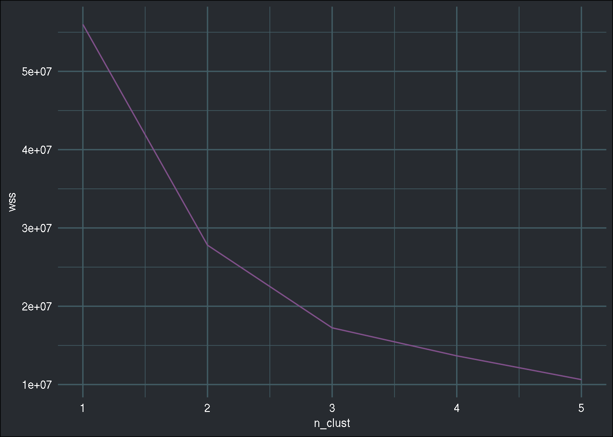
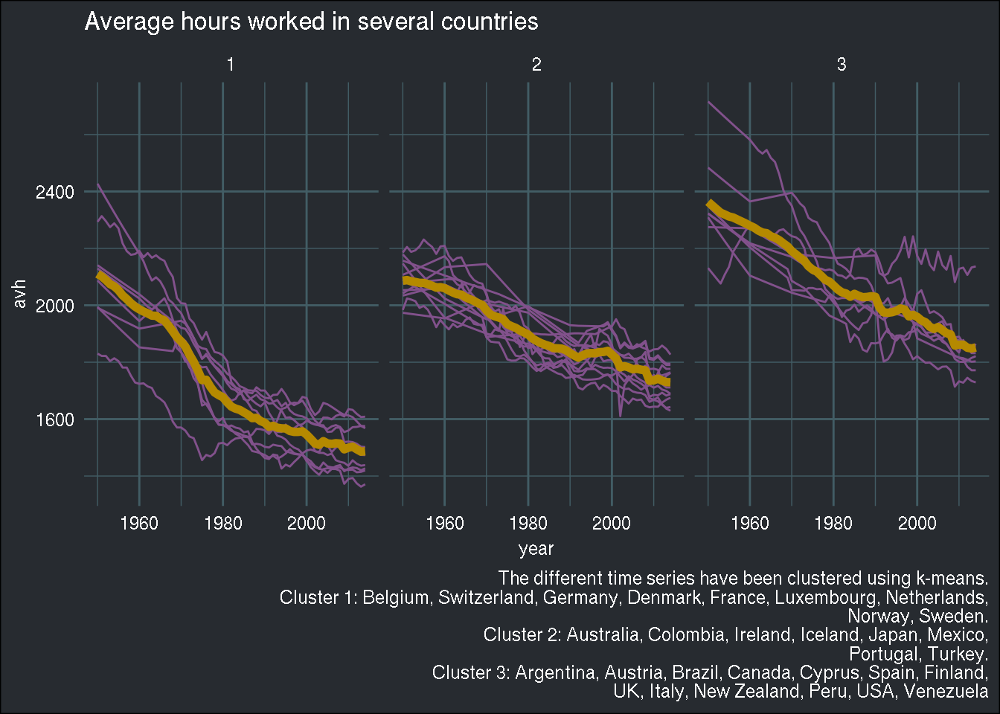

Cluster multiple time series using K-means
I have been recently confronted to the issue of finding similarities among time-series and though about using k-means to cluster them. To illustrate the method, I’ll be using data from the Penn World Tables, readily available in R (inside the {pwt9} package):
library(tidyverse)
library(lubridate)
library(pwt9)
library(brotools)First, of all, let’s only select the needed columns:
pwt <- pwt9.0 %>%
select(country, year, avh)
avh contains the average worked hours for a given country and year. The data looks like this:
head(pwt)## country year avh
## ABW-1950 Aruba 1950 NA
## ABW-1951 Aruba 1951 NA
## ABW-1952 Aruba 1952 NA
## ABW-1953 Aruba 1953 NA
## ABW-1954 Aruba 1954 NA
## ABW-1955 Aruba 1955 NA
For each country, there’s yearly data on the avh variable. The goal here is to cluster the different countries by looking at how similar they are on the avh variable. Let’s do some further cleaning. The k-means implementation in R expects a wide data frame (currently my data frame is in the long format) and no missing values. These could potentially be imputed, but I can’t be bothered:
pwt_wide <- pwt %>%
pivot_wider(names_from = year, values_from = avh) %>%
filter(!is.na(`1950`)) %>%
mutate_at(vars(-country), as.numeric)
To convert my data frame from long to wide, I use the fresh pivot_wider() function, instead of the less intuitive spread() function.
We’re ready to use the k-means algorithm. To know how many clusters I should aim for, I’ll be using the elbow method (if you’re not familiar with this method, click on the image at the very top of this post):
wss <- map_dbl(1:5, ~{kmeans(select(pwt_wide, -country), ., nstart=50,iter.max = 15 )$tot.withinss})
n_clust <- 1:5
elbow_df <- as.data.frame(cbind("n_clust" = n_clust, "wss" = wss))
ggplot(elbow_df) +
geom_line(aes(y = wss, x = n_clust), colour = "#82518c") +
theme_blog()
Looks like 3 clusters is a good choice. Let’s now run the kmeans algorithm:
clusters <- kmeans(select(pwt_wide, -country), centers = 3)
clusters is a list with several interesting items. The item centers contains the “average” time series:
(centers <- rownames_to_column(as.data.frame(clusters$centers), "cluster"))## cluster 1950 1951 1952 1953 1954 1955 1956
## 1 1 2110.440 2101.273 2088.947 2074.273 2066.617 2053.391 2034.926
## 2 2 2086.509 2088.571 2084.433 2081.939 2078.756 2078.710 2074.175
## 3 3 2363.600 2350.774 2338.032 2325.375 2319.011 2312.083 2308.483
## 1957 1958 1959 1960 1961 1962 1963 1964
## 1 2021.855 2007.221 1995.038 1985.904 1978.024 1971.618 1963.780 1962.983
## 2 2068.807 2062.021 2063.687 2060.176 2052.070 2044.812 2038.939 2037.488
## 3 2301.355 2294.556 2287.556 2279.773 2272.899 2262.781 2255.690 2253.431
## 1965 1966 1967 1968 1969 1970 1971 1972
## 1 1952.945 1946.961 1928.445 1908.354 1887.624 1872.864 1855.165 1825.759
## 2 2027.958 2021.615 2015.523 2007.176 2001.289 1981.906 1967.323 1961.269
## 3 2242.775 2237.216 2228.943 2217.717 2207.037 2190.452 2178.955 2167.124
## 1973 1974 1975 1976 1977 1978 1979 1980
## 1 1801.370 1770.484 1737.071 1738.214 1713.395 1693.575 1684.215 1676.703
## 2 1956.755 1951.066 1933.527 1926.508 1920.668 1911.488 1904.316 1897.103
## 3 2156.304 2137.286 2125.298 2118.138 2104.382 2089.717 2083.036 2069.678
## 1981 1982 1983 1984 1985 1986 1987 1988
## 1 1658.894 1644.019 1636.909 1632.371 1623.901 1615.320 1603.383 1604.331
## 2 1883.376 1874.730 1867.266 1861.386 1856.947 1849.568 1848.748 1847.690
## 3 2055.658 2045.501 2041.428 2030.095 2040.210 2033.289 2028.345 2029.290
## 1989 1990 1991 1992 1993 1994 1995 1996
## 1 1593.225 1586.975 1573.084 1576.331 1569.725 1567.599 1567.113 1558.274
## 2 1842.079 1831.907 1823.552 1815.864 1823.824 1830.623 1831.815 1831.648
## 3 2031.741 2029.786 1991.807 1974.954 1973.737 1975.667 1980.278 1988.728
## 1997 1998 1999 2000 2001 2002 2003 2004
## 1 1555.079 1555.071 1557.103 1545.349 1530.207 1514.251 1509.647 1522.389
## 2 1835.372 1836.030 1839.857 1827.264 1813.477 1781.696 1786.047 1781.858
## 3 1985.076 1961.219 1966.310 1959.219 1946.954 1940.110 1924.799 1917.130
## 2005 2006 2007 2008 2009 2010 2011 2012
## 1 1514.492 1512.872 1515.299 1514.055 1493.875 1499.563 1503.049 1493.862
## 2 1775.167 1776.759 1773.587 1771.648 1734.559 1736.098 1742.143 1735.396
## 3 1923.496 1912.956 1902.156 1897.550 1858.657 1861.875 1861.608 1850.802
## 2013 2014
## 1 1485.589 1486.991
## 2 1729.973 1729.543
## 3 1848.158 1851.829
clusters also contains the cluster item, which tells me to which cluster the different countries belong to. I can easily add this to the original data frame:
pwt_wide <- pwt_wide %>%
mutate(cluster = clusters$cluster)Now, let’s prepare the data for visualisation. I have to go back to a long data frame for this:
pwt_long <- pwt_wide %>%
pivot_longer(cols=c(-country, -cluster), names_to = "year", values_to = "avh") %>%
mutate(year = ymd(paste0(year, "-01-01")))
centers_long <- centers %>%
pivot_longer(cols = -cluster, names_to = "year", values_to = "avh") %>%
mutate(year = ymd(paste0(year, "-01-01")))And I can now plot the different time series, by cluster and highlight the “average” time series for each cluster as well (yellow line):
ggplot() +
geom_line(data = pwt_long, aes(y = avh, x = year, group = country), colour = "#82518c") +
facet_wrap(~cluster, nrow = 1) +
geom_line(data = centers_long, aes(y = avh, x = year, group = cluster), col = "#b58900", size = 2) +
theme_blog() +
labs(title = "Average hours worked in several countries",
caption = "The different time series have been clustered using k-means.
Cluster 1: Belgium, Switzerland, Germany, Denmark, France, Luxembourg, Netherlands,
Norway, Sweden.\nCluster 2: Australia, Colombia, Ireland, Iceland, Japan, Mexico,
Portugal, Turkey.\nCluster 3: Argentina, Austria, Brazil, Canada, Cyprus, Spain, Finland,
UK, Italy, New Zealand, Peru, USA, Venezuela") +
theme(plot.caption = element_text(colour = "white"))